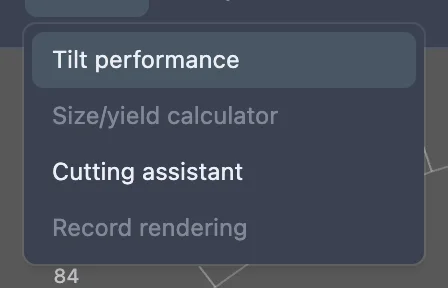
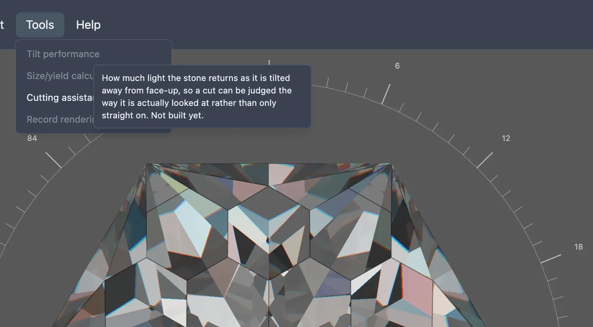

This feature is still being built. The menu item below exists, but choosing it does nothing yet.
Most renders and photos of a cut are taken face-up, straight down through the table, but a stone set in jewellery is rarely looked at that way — it gets tilted as it's worn and turned. A tilt performance analyzer would show how much light a design returns as it's tilted away from face-up, so a cut could be judged the way it is actually seen rather than only from directly above.
None of that is built yet. In the studio's Tools menu, an item named Tilt performance is already there, but it is greyed out and does nothing when clicked. Hovering it shows a tooltip describing what it is meant to do, ending "Not built yet."

